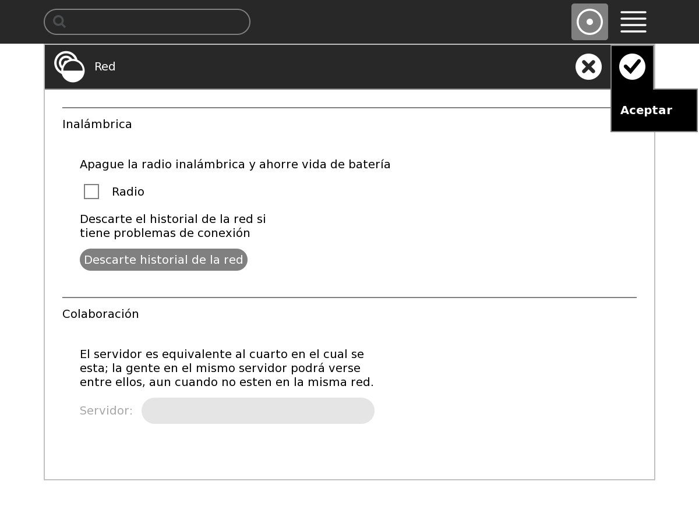

Anterior
Siguiente
5.5. Sin Red - Desde Sugar
para
Pasos a seguir...
1. Clic derecho en opcion Mis Ajustes
Figura 5.3. Mis Ajustes
2.Clic en Red
Figura 5.4. Red
3.Clic en Descarte Historial de la Red
Figura 5.5. D.Historial de la Red
4. Desmarcar la opcion radio
Figura 5.6. Radio
5. Opcion Aceptar

Figura 5.7. Aceptar
6.Repetir procedimiento, Seleccionar Opcion Radio y Aceptar
Figura 5.8. Marcar Radio
Anterior
5.4. Sin Red - Desde OFW
Subir
Inicio
Siguiente
5.6. Prueba Memoria RAM